- Data time and frame sequence: the frame, date and time selected,
- Product elevation: Radar tilt angle or MSL altitude
- Current date and time: UTC
CIDD consists of two principle display panels; one of plan view and one for cross sectional data views. In addition a set of control sub panels are used to select products, add or change attributes of products in the images, control movie looping, etc. Many of the most frequently used operations such as selecting different products, heights or time of interest can be performed with one keystroke or mouse click in the display window, or pop up panels. Side by side comparisons of plan view or cross sectional data are accomplished by running multiple instances of CIDD. The Clone button/function available in the menu bar is an easy way to re-read the parameter files and duplicate the display. Additional applications, which display data as textual tables, line graphs, sounding plots or mediograms can be run as CIDD plugins . These applications communicate with CIDD, reading the latest times and click points of interest.
 The main display window
has a menu bar area above the plan view graphic image. The buttons in
the menu bar allow the user to toggle features on and off, or to pop up
sub panels with additional menu options.
The main display window
has a menu bar area above the plan view graphic image. The buttons in
the menu bar allow the user to toggle features on and off, or to pop up
sub panels with additional menu options. NOTE: All button labels and positions are configurable. This is only a sample configuration. Many configurations have only a few buttons configured to be visible.
| |
Directly below the menu bar is the time and flight level
information bar. This bar shows:
|
| To change the elevation level, click the left mouse button in the
height margin. You can also step up and down in height by
pressing the up or down arrow key on the keyboard. Note: Some
data may not be volumetric (3D), and thus the user cannot
move up or down in height. Note: in order to use the keyboard cursor keys, the mouse pointer must be within the main display window. |
| Click on the Time axis to move to the frame closest to the chosen time.
The shaded bar shows the coverage in time.
To change the time, click with the left mouse button in the time scale margin.
Pressing the left or right arrow keys on the keyboard also moves the time by one frame.
Note: in order to use the keyboard cursor keys, the mouse pointer must be within the main display window. |
| 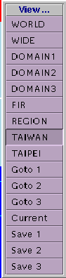 | The view menu allows you to select pre-defined domains. There are also buttons that allow you to save custom zoom states and return to the saved states. Custom Zoom: Use the left-mouse button (click and drag) to define an arbitrary region. This user-defined region becomes the current zoom and will cause the 'Current' button to be selected. Unzoom by choosing one of the pre-defined domains. Panning: You can pan or move the image with the middle mouse button: Click on a point and drag it to the desired location, then release. Saving zoom states: To save the current zoom, click on 'Save 1', 'Save 2', or 'Save 3'. To go back to the saved view, click on 'Goto 1', 'Goto 2', or 'Goto 3'. |
| 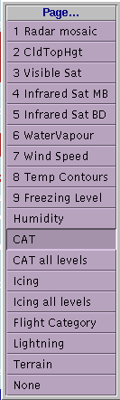 | The 'Field or Page' menu (see left Fig.) is a pop-up menu for selecting a desired data set page. Select the desired page by clicking on the appropriate button. Click on 'Field/Page' again in the menu bar to remove the menu. |
| 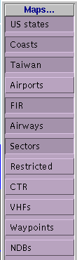 |
The 'Overlay or Page' menu (see left Fig.) is a pop-up menu for selecting
desired map overlays. Select the desired map by clicking on the
appropriate button. Click on 'Overlays...' button again in the menu bar to remove
the menu NOTE: Map features may be visible only in certain zoom states. Typically, maps are set up to reveal additional detail as the user zooms in to smaller and smaller domains. |
 |
The 'Product' menu (see left Fig.) is a pop-up menu for selecting various products, drawn as lines, text or symbols. The labels which appear are configurable/td> |
 |
The 'URL' menu (see left Fig.) is a pop-up menu for sending a browser to a desired web page. Select the desired page by clicking on the appropriate button. the menu. |
| The 'Model Run' menu (see left Fig.) is a pop-up menu for selecting which model run to gather data from. When 'Latest' is selected, the servers will return data for the requested time from the latest model run(s). It is quite possible to get data which spans several runs in this mode. When a specific run time is selected, the servers will return data from only that specific model run. Note that if several models are configured in, CIDD will make a request for the model run times of the main data field being used. You should select a data field from the model you intend to select before enabling this menu. |
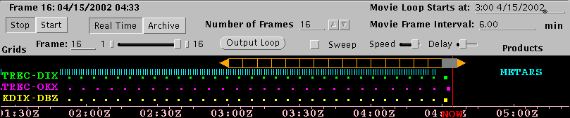
The movie control panel has two main sections. The upper half of the panel contains controls for manipulating the movie animation. The lower half contains indicators showing the presence of data along the time line.
| 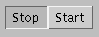 | You can start and stop the movie by clicking this button.
You can also step through the
frames by hitting the left arrow key (go back) or right arrow key (go forward)
on the keyboard.
For this to work, the pointer must be in the main window. |

| The display may be run in 'Real-time' or 'Archive' mode. In real-time mode, new data is added to the end of the movie loop as it arrives and the loop advances as time passes. Real-time mode is the default behavior of a live system such as WSDDM. In archive mode, the movie loop remains static, it does not move as time passes, and the display does not check for new data. Archive mode is used for viewing old data for analysis purposes. To set the display to archive mode, click on the Archive button. |
| 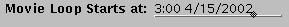 | Set the desired movie start time in the top text box that reads 'Movie Loop Starts at:' The data entered is:hour:minute month/day/year. You can either use the format presented in the time text box, or you can just enter numbers separated by spaces.(Remember to hit "Enter" when you are done.) To return to real-time mode, click on the 'Real Time' button on the movie panel |
| 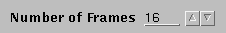 | You can change the number of movie frames in three ways:
|
| 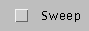 | Sweep Button: Use the Sweep Button to enter sweep mode. In sweep mode the movie goes forwards
and backwards in sequence, instead of just forwards. |
| 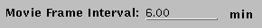 | This changes the movie frame time interval. Enter the number of minutes per
frame in the text box. (Remember to hit "Enter" when you are done.) |
| 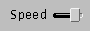 | Speed Slider Bar
The 'Speed' slider bar in the Movie Control Panel controls the speed of the
animation loop. Move the slider further to the right side to increase the speed. |

| Delay Slider Bar The 'Delay' slider bar controls the length of time the animation delays on the last frame. Move the slider further to the right side indicating a longer delay. |
| 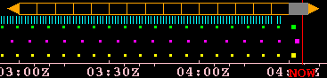 | Data Availability and Loop Coverage The lower half of the panel is a graphical display which shows, from top to bottom, the "movie bar", a bar showing the span of the current movie extent, and the frame divisions, the available data with tick lines showing when symbol data exist and tiny squares showing when gridded data exists , and a selectable time scale in the bottom margin. The enlarged dots indicate a which data grids are currently visible. |
 |
Movie Bar Click on a frame to move to that frame. Click and Drag on the start or finish solid triangles, at either end of the movie bar, to extend or shorten the movie loop. This will add or decrease the number of animated frames. Click and drag on the central section of the Movie Bar to shift the loop in time, leaving the number of animated frames intact. |
| 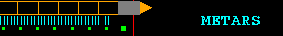 | Each vertical tick mark represents one binary record of data of the type listed, created at the indicated time. The small squares represent gridded data files, valid at the indicated time. The larger sized squares show grids currently on the screen. |
 |
| Click on the Time axis to move to the frame closest to the chosen time. |
Notes:In 2006 the NWS asked us to make CIDD's cross section work more like the AWIPS display and also privide a way to identify and edit the position of various products. AWIPS works using the Left button for all selection while CIDD used the right button for cross sections. Cidd can be configured to use either button to define flight paths, but when configured to use the left button it gains some addtional functionality such as the ability to display hidden, pop-up text when mousing over products on the screen.Left Mouse (AWIPS) mode.The Cross Section or Flight Route is selected by 1. Pressing the 'route define' button on the top of the plan view window, indicates a desire to define flight path The display starts in "zoom mode" where click and drag defines a new zoom area. 2. Click and drag the left mouse button across the plan view graphics, starting at the some origin and releasing over the first way point. Multiple segments may be chosen. Click the button at each way point along the path, and then twice at the last way point to end. If you make a mistake, click the right button to erase the previous segment. Click twice on the end of the last segment to complete the selection. Right Mouse (Backward Compatibility) mode.The Cross Section or Flight Route is selected by clicking and dragging the right mouse button across the plan view graphics. Multiple segments may be chosen. Click the button at each way point, and then twice at the last way point If you make a mistake, click the left button to erase the previous segment. Click twice on the end of the last segment to complete the selection. One click Cross sectionsIf the parameter cidd.one_click_rhi is set to 1, then CIDD will end the cross section after the mouse button is released after the click and drag.. This allows for a simple; click, drag, release, method for defining a cross section. The RADAR guys bore great hardship clicking that second time to end, so with great pity for their plight, this one-click option was added. WHen this is set, no multi way point paths can be defined.Terrain MaskingThe terrain along the route is depicted in solid brown, overlaying the data field. Note this terrain masking is only available if the 'terrain_url' is set and the vertical data is on the same units as the vertical view. Show a different field in the Cross sectionTo select a different field from the plan view, right-click in the vertical section window and select the field from the menu that appears.The route is shown as a bold yellow line in the plan view. The way points are labeled by the closest navigational fix (way point, VHF navaid or airport) within 20 nm of the selected point. If no navigational fix lies within a 20 nm radius, the point will be marked with a number indicating its position on the route. For example, the first point will be labeled "1", the third point "3", and so on. Clicking on the button labeled 'Routes' will bring up a list of pre-defined routes. You may click on any of these to select it. The latest route you entered by clicking and dragging may be retrieved by using the 'Custom' button on that menu. The 'Label Waypoints' check-box toggles the waypoint labels on and off, in case they are obscuring data. If waypoint labels are on, navigational fixes which lie within a 20 nm radius will be marked on the plan view. Otherwise, they will not. The 'Show Winds Text' is a check-box that toggles the segment route values text on and off. The mean wind for segments along the flight is plotted at the mid-point of each segment in the plan view. The 'Average wind' label located directly under the window title bar displays the average wind along the entire flight route. The 'Turbulence and/or icing warnings' label located under 'Average wind' label, in red, warns if a route goes through an area of turbulence or icing, or both, regardless of the data being viewed. Otherwise it is empty. (In the example, it shows "HIGH CAT!" indicating the route passes through an area with a high probability of Clear Air Turbulence.) The selected flight level is depicted by the dashed horizontal line, with a height/elevation scale on the left and a color bar on the right. |
 |
The Data Configuration Panel |
| The Overlays/Layers Panel |
| The Product Status Panel |
enter: CIDD -p paramfilename
to start up the display. A sample parameter file with all parameters and comments on their
usage can be printed using 'CIDD -print_params'. All Command line options can be had
by entering 'CIDD -help'. Sample parameter files can be viewed and downloaded from:
http://www.rap.ucar.edu/CIDD